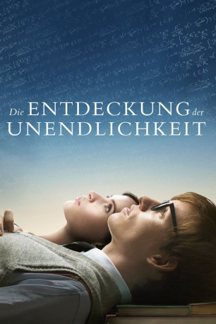

Auszeichnungen: 1 Oscars gewonnen für 4 Oscars nominiert 2 GoldenGlobes gewonnen 1 BAFTA-Awards gewonnen
 gesehen am 06.05.2015
gesehen am 06.05.2015Alternativ: The Theory of Everything
Auszeichnungen: 1 Oscars gewonnen für 4 Oscars nominiert 2 GoldenGlobes gewonnen 1 BAFTA-Awards gewonnen gesehen am 06.05.2015
 
 IMDB-Wertung: 7.7 / 10
IMDB-Wertung: 7.7 / 10  Metascore:
Metascore: 
Während seines Studiums an der renommierten Cambridge University in den 1960er Jahren verliebt sich der brillante Naturwissenschaftler Stephen Hawking bis über beide Ohren in die Sprachenstudentin Jane Wilde. Einen herben Rückschlag erhält der theoretische Physiker, der sich vor allem mit dem Phänomen der Zeit und dem Ursprung des Universums beschäftigt, im Alter von nur 21 Jahren, als bei ihm die degenerative Nervenkrankheit ALS diagnostiziert wird. Die Ärzte geben ihm nur noch etwa zwei Jahre zu leben. Doch schiere Willenskraft und nicht zuletzt die Liebe Janes, die ihn nach dem niederschmetternden Befund nicht etwa verlässt, sondern seine Frau wird, helfen ihm, den immer größeren körperlichen Einschränkungen zu trotzen und schließlich mit seinen bahnbrechenden Forschungen in die Geschichte einzugehen.
Jahr: 2014
Dauer: 123 Minuten
FSK: 0
Land: England Studio: UPITonspuren: DTS - ,
Untertitel: Deutsch,
Auflösung: 1080p (1920x800) Größe: 6461 MB
Genre: Drama, Liebe, Biographie
Regisseur: James Marsh
Drehbuch: Anthony McCarten, Jane Hawking
Soundtrack: Jóhann Jóhannsson
Darsteller:
 Eddie Redmayne als Stephen Hawking
Eddie Redmayne als Stephen Hawking Felicity Jones als Jane Hawking
Felicity Jones als Jane Hawking Harry Lloyd als Brian
Harry Lloyd als Brian Alice Orr-Ewing als Diana King
Alice Orr-Ewing als Diana King David Thewlis als Dennis Sciama
David Thewlis als Dennis Sciama Emily Watson als Beryl Wilde
Emily Watson als Beryl Wilde Simon McBurney als Frank Hawking
Simon McBurney als Frank Hawking Charlotte Hope als Philippa Hawking
Charlotte Hope als Philippa Hawking Christian McKay als Roger Penrose
Christian McKay als Roger Penrose Adam Godley als Senior Doctor - Cambridge Hospital
Adam Godley als Senior Doctor - Cambridge Hospital Enzo Cilenti als Kip Thorne
Enzo Cilenti als Kip Thorne Eileen Davies als Eileen Bond
Eileen Davies als Eileen Bond Simon Chandler als John Taylor
Simon Chandler als John Taylor Georg Nikoloff als Khalatnikov
Georg Nikoloff als Khalatnikov Charlie Cox als Jonathan Hellyer Jones
Charlie Cox als Jonathan Hellyer Jones Jill Buchanan als Lecture Attendee , uncredited
Jill Buchanan als Lecture Attendee , uncredited Pamela Betsy Cooper als Opera Audience , uncredited
Pamela Betsy Cooper als Opera Audience , uncredited Gioacchino Jim Cuffaro als Audience , uncredited
Gioacchino Jim Cuffaro als Audience , uncredited Richard Cunningham als Equerry , uncredited
Richard Cunningham als Equerry , uncredited Karl Farrer als Theatre Goer , uncredited
Karl Farrer als Theatre Goer , uncredited Joelle Koissi als Audience , uncredited
Joelle Koissi als Audience , uncredited John Neville als Pub Customer , uncredited
John Neville als Pub Customer , uncredited Emily Ng als Student , uncredited
Emily Ng als Student , uncredited Hugh O'Brien als Press Photographer , uncredited
Hugh O'Brien als Press Photographer , uncredited Jeremy Oliver als Hotel Guest , uncredited
Jeremy Oliver als Hotel Guest , uncredited John Warman als Parent at Church , uncredited
John Warman als Parent at Church , uncreditedDatei: X:\2014(A-F)\Entdeckung der Unendlichkeit, Die (2014, FSKo.Al., 1920x800).mkv seit 24.04.2015
Festplatte: HD 2013(I-Z)-2014(A-Z)
 Es gibt insgesamt 119 Filme in der Gruppe '2014(A-F)'
Es gibt insgesamt 119 Filme in der Gruppe '2014(A-F)'